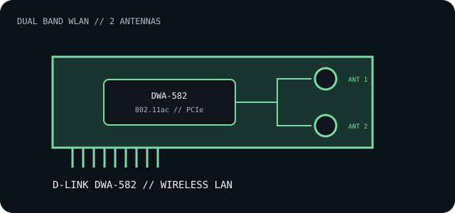

[ INDIVIDUAL COMPONENT // EXPANSION CARDS ]
D-Link DWA-582
Dual-band Wireless AC PCI Express adapter with two external antennas. Its advertised radio rate is a PHY maximum, not expected file-transfer throughput.

IDENTIFICATION: The DWA-582 product family has hardware revisions; match the suffix/revision printed on the card to the corresponding D-Link support page and driver. Do not substitute another revision's package solely because the model number matches.
Specifications and compatibility
| Exact model / identifier | D-Link DWA-582 Wireless AC1200 Dual Band PCI Express Adapter. |
|---|---|
| Controller / radio | D-Link does not identify a single wireless controller part number on the cited overview page; the radio/chipset can be revision-dependent. Confirm the PCI ID and hardware revision before driver selection. |
| Bus / host interface | PCI Express adapter; install in a host PCIe slot with suitable card clearance and bracket height. |
| Wireless standards | 802.11ac dual-band 5 GHz, backward-compatible with 802.11n/g/b on 2.4 GHz. D-Link specifies up to 867 Mb/s for the 5 GHz Wireless AC link. |
| Ports / connectors | Two external high-gain antenna connectors and two supplied antennas; no wired Ethernet or Bluetooth connector is listed. |
| OS / driver compatibility | Use the D-Link support record for the card's exact revision and operating system. Windows driver availability is revision-specific; current OS installation may require a separately signed vendor package. |
| Revision / host caveat | Inspect the board label, regional SKU and driver release notes. Check PCIe slot fit and available bracket space; antenna placement affects radio performance. |
Installation and archival notes
- Install only the driver package associated with the complete model/revision identifier.
- Attach both antennas before operation and record the PCI vendor/device ID and D-Link driver version.
- Verify operating-system support and motherboard slot clearance instead of assuming that any x1-length slot or generic 802.11ac driver is sufficient.
Manufacturer specifications and documentation
- D-Link — DWA-582 product overviewWireless AC product identity, band capabilities and published 5 GHz link rate.
- D-Link DWA-582 user manualRehosted manual reference; match its hardware revision to the installed card before applying instructions or drivers.
- IEEE 802.11 Working GroupWireless LAN standards family reference.